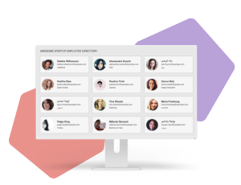

Frontend
Anställdskatalog med API
med API, CSS, HTML och JavaScript

Projektet
I detta projekt använde jag Random User Generator API (https://randomuser.me/) för att få information för 12 slumpmässiga "anställda" och använda den informationen för att bygga en prototyp för ett företags anställdskatalog.
Min roll
Jag kodade designen och sökfunktionen utefter en beskrivning.